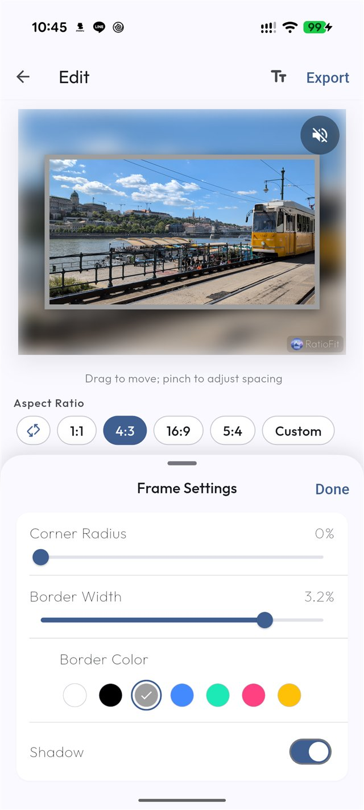
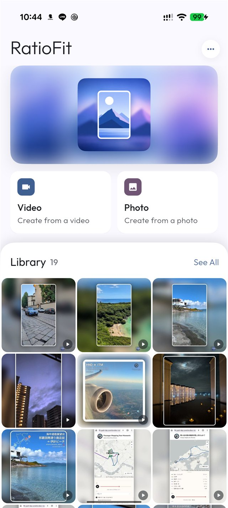
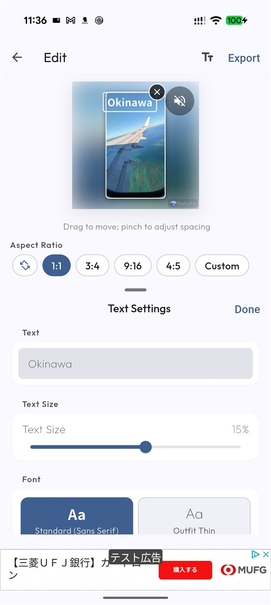

Find your ratio
Choose 1:1, 3:4, 4:5, 9:16, 4:3, 16:9, 5:4, or define a custom ratio.
A LITTLE ROOM FOR EVERY MEMORY
Fit photos and videos to the places you share them. Add a soft blur or a favorite color to the extra space. Keep every part of the memory.
Your media and editing data stay on your device. The operator cannot view or retrieve their contents.

01 / A LITTLE MORE ROOM
Choose the ratio for your next post. RatioFit keeps the original proportions and fills the extra space so nothing gets left behind.
An illustration of aspect ratios. Make your own adjustments in the app.

02 / YOUR EVERYDAY KIT
For reels, stories, and the travel album. Thoughtful tools to help your photos and videos feel right at home.
Choose 1:1, 3:4, 4:5, 9:16, 4:3, 16:9, 5:4, or define a custom ratio.
Fill the extra space with an adjustable blur of your media or a solid color. Choose a preset or use precise HSV and HEX controls.
Drag to reposition and pinch to adjust padding. Choose resolution and audio options when exporting video.
Add rounded corners, borders, shadows, and text. Fine-tune the look to suit your next post.
Find your creations in the built-in library. Save them to your device or send them through the Android share menu.
Your photos and videos are not uploaded to a server operated by PATH. Editing happens on your device.
03 / FROM GALLERY TO GO
From your gallery to your next post in three steps. Adjust as you go with a live preview.
Import from your gallery or the Android share menu. Find your creations again in the built-in library.

Preview ratio, padding, position, background, and frame. Choose 9:16, 1:1, or the right format for your post.
Choose quality and audio settings, then save to your device. Share to Instagram, YouTube, TikTok, or anywhere else.

04 / YOUR OWN SPACE
The operator cannot view your photos, videos, or internal app data. All editing happens on your device.
RatioFit handles limited aggregate usage events, but Firebase Analytics does not receive media contents, file names, file paths, editing details or values, share destinations, or the contents of your in-app library.
Read the privacy policyGOOD TO KNOW
Yes. RatioFit keeps the source proportions and fills the extra area with a blurred or solid-color background.
Yes. Use 1:1, 3:4, 4:5, 9:16, 4:3, 16:9, 5:4, or a custom ratio.
RatioFit processes edits on your device and does not upload your media to a server operated by PATH.
A photo and video aspect ratio app for Android.